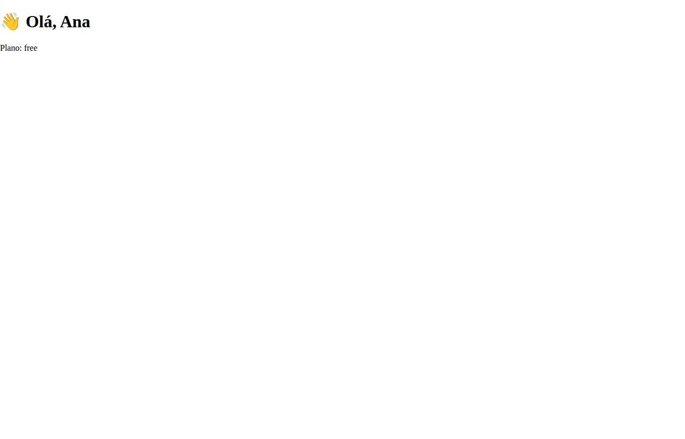

Projeto: SaaS básico — auth, banco e assinatura
A Ana quer transformar o app dela num produto pago: cada usuário tem conta própria, dados no banco e um plano (grátis ou pro). Neste projeto você monta a base de um SaaS: Auth.js para login, Prisma para o banco (SQLite em dev, Postgres na Vercel), Stripe Billing para assinatura e middleware protegendo as rotas pagas.
- Auth.js (NextAuth v5):
auth.jsna raiz, rotas/api/auth/[...nextauth],auth()no servidor - Prisma: schema com User/Subscription,
prisma migrate dev, cliente singleton - Vercel Postgres (ou Neon/Supabase) e
DATABASE_URLcomo secret - Stripe Billing: produto/plano, checkout de assinatura e Billing Portal (cliente gerencia o cartão sozinho)
- Proteger rotas no middleware pela sessão e checar o plano dentro da página
A ideia: o clube com carteirinha e catraca
Um SaaS é como um clube: a catraca na porta é o login (só quem tem carteirinha entra — Auth.js guarda a sessão num cookie seguro), o arquivo de sócios é o banco de dados (Prisma guarda usuário, assinatura, pagamentos), e a área VIP é a rota paga, que só abre se o plano do sócio for "pro" (checado no servidor, nunca só no navegador). A mensalidade é cobrada pelo Stripe em modo subscription, e o próprio Stripe hospeda o portal onde o cliente troca o cartão e cancela — seu servidor só recebe o webhook avisando o que mudou.
Ana abre o clube: carteirinha para entrar, catraca para contar, backoffice no fundo
O clube da Ana funciona com carteirinha: quem não tem login não passa da catraca — e a catraca (o middleware) confere a carteirinha em todas as portas ao mesmo tempo. No SaaS dela acontece o mesmo: o middleware protege todas as rotas internas conferindo a sessão, o banco guarda usuários, planos e assinaturas, e só quem pagou vê a área de assinante.
E a assinatura é cobrada pela maquininha (Stripe Billing): a Ana cadastra os planos no painel, o cliente assina pelo checkout hospedado, e o webhook avisa o servidor dela "pagou!" para liberar o acesso. Ela nunca vê o número do cartão — igual no clube, a catraca só lê a carteirinha, não o RG.
Passo 1 — Auth.js (login) e Prisma (banco)
npm install next-auth@beta prisma @prisma/client npx prisma init --datasource sqlite # em dev; em produção: Vercel Postgres (DATABASE_URL)
generator client { provider = "prisma-client-js" }
datasource db { provider = "postgresql"; url = env("DATABASE_URL") }
model User {
id String @id @default(cuid())
email String @unique
name String?
createdAt DateTime @default(now())
sub Subscription?
}
model Subscription {
id String @id @default(cuid())
userId String @unique
user User @relation(fields: [userId], references: [id])
plano String @default("free") // "free" | "pro"
stripeCustomerId String?
stripeSubId String?
status String @default("active")
}
npx prisma migrate dev --name init # cria o banco e gera o cliente
import NextAuth from 'next-auth';
import GitHub from 'next-auth/providers/github';
import { PrismaAdapter } from '@auth/prisma-adapter';
import { prisma } from '@/lib/prisma';
export const { handlers, auth, signIn, signOut } = NextAuth({
adapter: PrismaAdapter(prisma),
providers: [GitHub], // também: Credentials, Google…
});
// AUTH_SECRET vai no .env.local (gere com: npx auth secret)
import { handlers } from '@/auth';
export const { GET, POST } = handlers; // /api/auth/signin, /api/auth/callback/github…
import { PrismaClient } from '@prisma/client';
const globalForPrisma = globalThis;
export const prisma = globalForPrisma.prisma ?? new PrismaClient();
if (process.env.NODE_ENV !== 'production') globalForPrisma.prisma = prisma; // evita recriar em dev
Passo 2 — proteger rotas e ler a sessão no servidor
export { auth as middleware } from '@/auth';
// o Auth.js v5 protege tudo por padrão; para liberar páginas públicas use matcher:</n// export const config = { matcher: ['/((?!api|_next/static|_next/image|login|cadastro).*)'] };
import { auth } from '@/auth';
import { redirect } from 'next/navigation';
import { prisma } from '@/lib/prisma';
export default async function Dashboard() {
const session = await auth();
if (!session?.user) redirect('/api/auth/signin'); // o middleware já barra, aqui é redundância segura
const user = await prisma.user.findUnique({
where: { email: session.user.email },
include: { sub: true },
});
const plano = user?.sub?.plano || 'free';
return (
<main>
<h1>👋 Olá, {session.user.name}</h1>
<p>Seu plano: <strong>{plano}</strong></p>
{plano === 'free' && <BannerUpgrade />}
{plano === 'pro' ? <AreaPro /> : <AreaFree />}
</main>
);
}
Passo 3 — assinatura com Stripe (modo subscription + portal)
'use server';
import Stripe from 'stripe';
import { auth } from '@/auth';
import { prisma } from '@/lib/prisma';
import { redirect } from 'next/navigation';
const stripe = new Stripe(process.env.STRIPE_SECRET_KEY);
export async function assinarPro() {
const session = await auth();
if (!session?.user?.email) return;
let user = await prisma.user.findUnique({ where: { email: session.user.email }, include: { sub: true } });
// cria (ou reutiliza) o customer no Stripe
if (!user.sub?.stripeCustomerId) {
const customer = await stripe.customers.create({ email: user.email, name: user.name ?? undefined });
user = await prisma.user.update({
where: { email: user.email },
data: { sub: { upsert: { create: { stripeCustomerId: customer.id }, update: { stripeCustomerId: customer.id } } } },
include: { sub: true },
});
}
// sessão de checkout no modo assinatura (price_… criado no painel do Stripe)
const checkout = await stripe.checkout.sessions.create({
mode: 'subscription',
customer: user.sub.stripeCustomerId,
line_items: [{ price: process.env.STRIPE_PRICE_PRO, quantity: 1 }],
success_url: `${process.env.NEXT_PUBLIC_URL}/dashboard?ass=ok`,
cancel_url: `${process.env.NEXT_PUBLIC_URL}/dashboard`,
});
redirect(checkout.url);
}
export async function abrirPortal() {
const session = await auth();
const user = await prisma.user.findUnique({ where: { email: session?.user?.email }, include: { sub: true } });
const portal = await stripe.billingPortal.sessions.create({
customer: user.sub.stripeCustomerId,
return_url: `${process.env.NEXT_PUBLIC_URL}/dashboard`,
});
redirect(portal.url); // página hospedada do Stripe: trocar cartão, cancelar…
}
import Stripe from 'stripe';
import { NextResponse } from 'next/server';
import { prisma } from '@/lib/prisma';
const stripe = new Stripe(process.env.STRIPE_SECRET_KEY);
export async function POST(req) {
const event = stripe.webhooks.constructEvent(
await req.text(),
req.headers.get('stripe-signature'),
process.env.STRIPE_WEBHOOK_SECRET,
);
if (event.type === 'customer.subscription.updated' || event.type === 'customer.subscription.deleted') {
const sub = event.data.object;
const plano = sub.status === 'active' ? 'pro' : 'free';
await prisma.subscription.update({
where: { stripeSubId: sub.id },
data: { plano, status: sub.status },
});
console.log('plano atualizado →', plano);
}
return NextResponse.json({ received: true });
}
DATABASE_URL="postgresql://…" # Vercel Postgres / Neon AUTH_SECRET="gere com: npx auth secret" AUTH_GITHUB_ID=… AUTH_GITHUB_SECRET=… STRIPE_SECRET_KEY=sk_test_… STRIPE_PRICE_PRO=price_… STRIPE_WEBHOOK_SECRET=whsec_… NEXT_PUBLIC_URL=http://localhost:3000

Missão: no componente abaixo, a área VIP está liberada para qualquer um. Complete a condição para só mostrar a área pro quando usuario.plano === 'pro': use {usuario.plano === 'pro' && <AreaPro />}. Rode e clique em Verificar missão.
function AreaPro() { return <p>🚀 Área PRO liberada (dados avançados)</p>; }
function App() {
const usuario = { nome: 'Ana', plano: 'free' }; // mude para 'pro' para testar
return (
<div>
<h1>👋 Olá, {usuario.nome}</h1>
<p>Plano: {usuario.plano}</p>
{/* TODO: {usuario.plano === 'pro' && <AreaPro />} */}
</div>
);
}function AreaPro() { return <p>🚀 Área PRO liberada (dados avançados)</p>; }
function App() {
const usuario = { nome: 'Ana', plano: 'free' };
return (
<div>
<h1>👋 Olá, {usuario.nome}</h1>
<p>Plano: {usuario.plano}</p>
{usuario.plano === 'pro' && <AreaPro />}
</div>
);
}Quando dá errado
DATABASE_URL não existe na Vercel. Prisma precisa da variável no build (para gerar o cliente) e em runtime:PrismaClientInitializationError: error: Environment variable not found: DATABASE_URL. → Vercel → Settings → Environment Variables → adicione DATABASE_URL (Production) → rode `npx prisma migrate deploy` (ou `prisma db push`) contra o banco de produção
STRIPE_WEBHOOK_SECRET é o do modo teste e o evento veio do modo real (ou vice-versa). Separe os secrets por ambiente e confirme no log do Stripe.Webhook signature verification failed → 400 → confira STRIPE_WEBHOOK_SECRET (whsec_…) e se o endpoint é o da branch certa
Exercícios
No Auth.js v5, a sessão no servidor é lida com:
O plano "pro" do usuário deve ser checado:
O Billing Portal do Stripe serve para:
Complete a leitura da sessão no servidor (Auth.js v5):
Complete o modo de checkout para assinatura (recorrente):